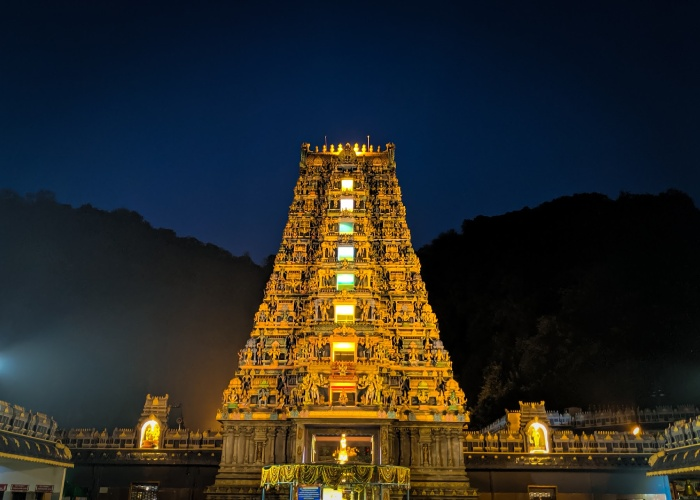
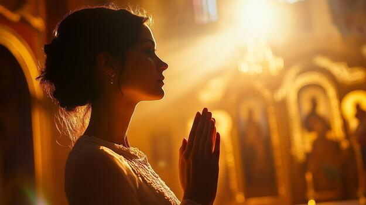
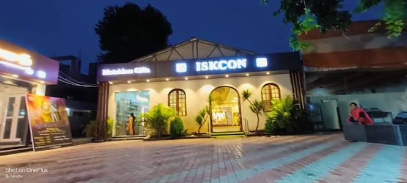
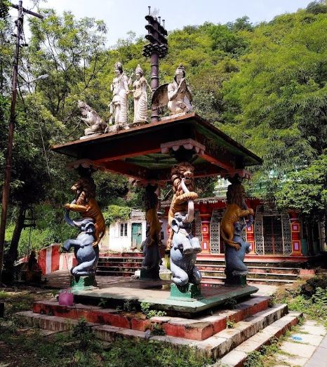
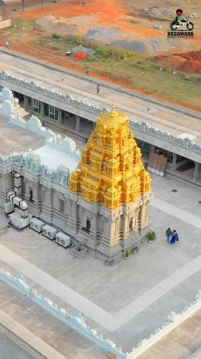

01 ↗INDRAKEELADRI
Kanaka Durga Temple
One of Vijayawada's best-known spiritual landmarks, situated on Indrakeeladri Hill overlooking the city and the Krishna River.

FAITH · HERITAGE · TRADITION
Discover the temples of Vijayawada, where centuries of tradition, spirituality and architecture come together.
Explore temples ↓THE SPIRITUAL SIDE OF THE CITY
From the famous Kanaka Durga Temple on Indrakeeladri to peaceful spiritual centres, explore places that hold a special place in Vijayawada's cultural life.
FOUR PLACES TO DISCOVER
Take a moment to explore the history, traditions and atmosphere of each place.

01 ↗INDRAKEELADRI
One of Vijayawada's best-known spiritual landmarks, situated on Indrakeeladri Hill overlooking the city and the Krishna River.

02 ↗SPIRITUAL CENTRE
A spiritual destination associated with Lord Krishna, devotional practices and the teachings of the ISKCON movement.

03 ↗RELIGIOUS LANDMARK
A place of worship dedicated to Lord Subrahmanya, also known as Kartikeya, revered by devotees across many South Indian traditions.

04 ↗TEMPLE VISIT
Visit a place of worship dedicated to Lord Venkateswara and discover another part of the city's devotional traditions.
A LITTLE BEFORE YOU GO
Temple timings, special darshan arrangements and festival schedules can vary. Check the temple's official information before travelling.
Confirm opening hours before your visit.
Follow the dress and entry guidelines at each temple.
Check directions and local travel conditions.